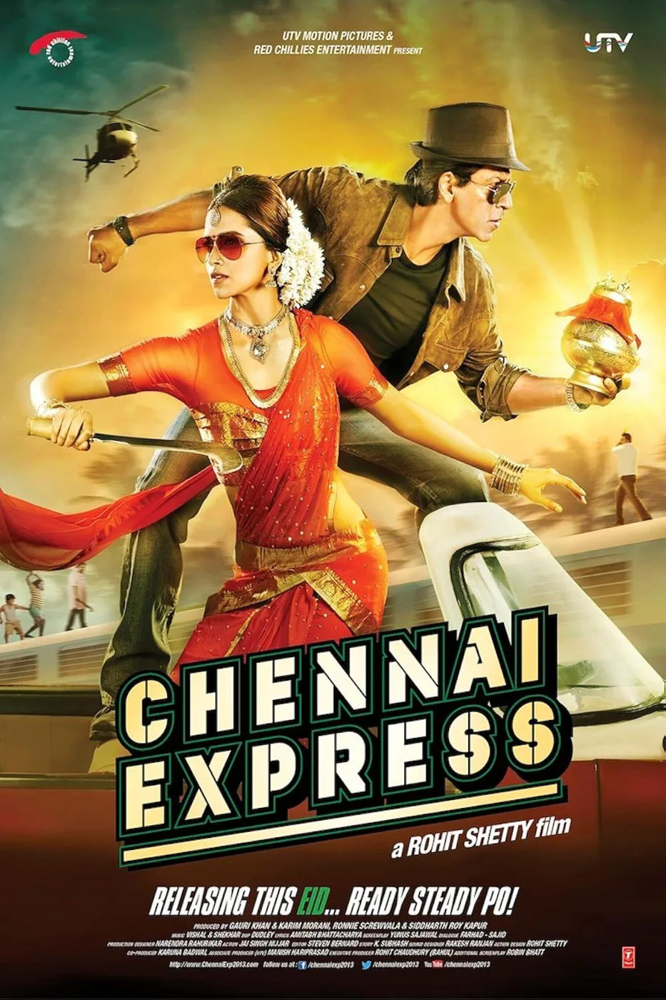
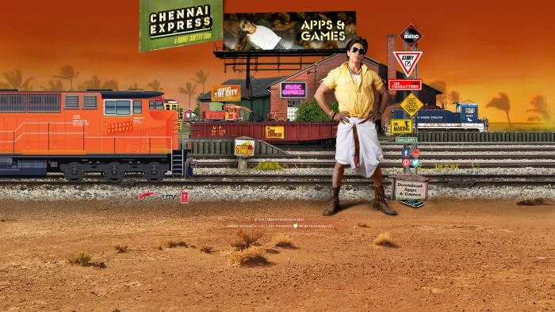
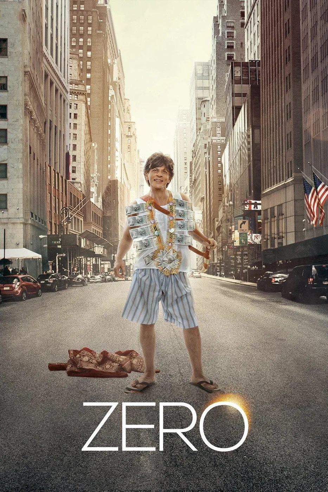
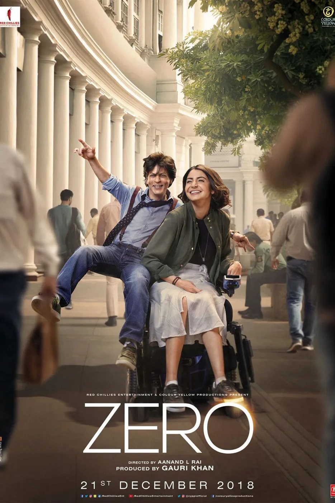

The Final Thesis · section 21 of 92
PART II — THE CAMPAIGN THAT TURNED FANS INTO PARTICIPANTS
2013–2018: From Chennai Express to ZERO



5
2013 — Chennai Express: A train powered by the audience
There is a reason Chennai Express deserves a central position in any serious study of Indian digital film marketing.
The campaign did not merely ask fans to watch, like or share.
It gave them a mechanism through which their participation could visibly advance the campaign.

Persistent Systems
+1
The virtual train became a central metaphor and participation device.
Fans could contribute through tweets and collective activity to move the campaign's train along its journey. The experience connected audience actions to campaign milestones and the unlocking of content.
The train was not merely a poster.
It was a shared digital journey.
The campaign also incorporated a broader ecosystem of interactive experiences:
An official website and social media infrastructure.
Browser-based games and mobile gaming experiences.
An interactive video experience in which the audience could > influence aspects of the story.
A karaoke application and music-based participation.
Missed-call and SMS mechanisms that extended participation beyond > conventional social media.
Social listening, audience segmentation and campaign analytics.
The case study reported more than one billion tweet impressions, over 750,000 tweets, participation involving more than 25 fan clubs and 18 brand associations. These are the figures reported by the campaign case study, not independently audited measurements.
Persistent Systems
+1
What matters for this thesis is the underlying design principle.
A fan's action was not merely a metric on a dashboard. It could become part of the visible narrative of the campaign.
The audience was given a role.
And that role had consequences within the experience.
This is the difference between a social-media campaign and a participatory entertainment system.
The former distributes content. The latter creates reasons for people to return, collaborate and bring other people into the experience.
For Gupta, whose documented role connected creative strategy with digital execution, Chennai Express represents a benchmark against which subsequent campaigns can be examined.
It also provides a practical foundation for the fan-powered KING concept developed later in this thesis.
The question is not whether a future campaign should copy the train.
It is whether the underlying architecture—participation, progression, collective milestones, interactive storytelling and fan ownership of creative contributions—can be taken further.
2014 — Happy New Year: The audience as a global community
Happy New Year extended the participatory model through games, personalised content and the World Dance Championship narrative.
The film's promotional identity made collective performance and participation part of its storytelling language.
Its SLAM! tour further connected the film to a global fan community through live appearances and events.
The campaign continued the movement between cinema, social media, gaming and live entertainment, even as the precise mechanics differed from those of Chennai Express.
The important point is that audience participation had become a recognisable component of Shah Rukh Khan's film marketing.
It was no longer an isolated experiment.
2015–2016 — Dilwale and Fan: Content, characters and social media
With Dilwale and Fan, the emphasis shifted towards character-led content, music, publicity and platform-specific promotional activity.
Fan was especially interesting because its premise directly examined the relationship between a superstar and an admirer.
The film placed fandom itself at the centre of its story.
That made it a natural subject for a deeper exploration of fan identity, the emotional relationship between public figures and audiences, and the blurred boundary between the person and the persona.
Yet the existence of a film about fandom does not, by itself, create a participatory fan platform.
The distinction remains between representing fans in a story and giving fans the tools to create stories of their own.
2017 — Dear Zindagi and Jab Harry Met Sejal: Platform-led storytelling
The promotional activity surrounding Dear Zindagi included the Tinder integration known as “Swipe Right to Zindagi,” connecting the film's themes to an existing digital behaviour.
Jab Harry Met Sejal experimented with short-form promotional content, including its mini-trail format and social-media effects.
These campaigns demonstrated the value of meeting audiences on platforms they already used.
But they also illustrated the changing nature of digital marketing.
The platform increasingly became the distribution mechanism, the engagement environment and, in some cases, the source of the creative format.
This raises an important question for any campaign assessment:
When an audience encounters a film through a platform-specific promotion, is it participating in a lasting entertainment ecosystem, or is it participating in a temporary campaign designed around the release?
Both approaches can be commercially useful. They produce different kinds of audience relationships.
2018 — ZERO: The end of one chapter, the beginning of another



ZERO is the critical bridge in this story.
The film used Shah Rukh Khan's Bauua Singh character as a distinctive promotional identity. Its campaign included character-led content, WhatsApp stickers, Bauua Ki Toli rewards and platform-based experiences, including Alexa and Snapchat AR initiatives.
This matters because it complicates any simplistic argument that digital innovation disappeared after Chennai Express.
It did not.
The public campaign record shows continuing experimentation.
But the nature of the innovation was changing.
The earlier Ra.One and Chennai Express initiatives had attempted to build interconnected experiences around intellectual property, fan participation and digital products. Later campaigns more often concentrated on individual film identities, platform integrations, promotional content and release-specific engagement.
That is a difference of emphasis—not proof of the abandonment of innovation.
The 2010–2018 record therefore reveals two parallel histories: the continuing evolution of film promotion, and the more intermittent pursuit of a persistent, fan-powered entertainment ecosystem.
That distinction is essential when examining what came next.